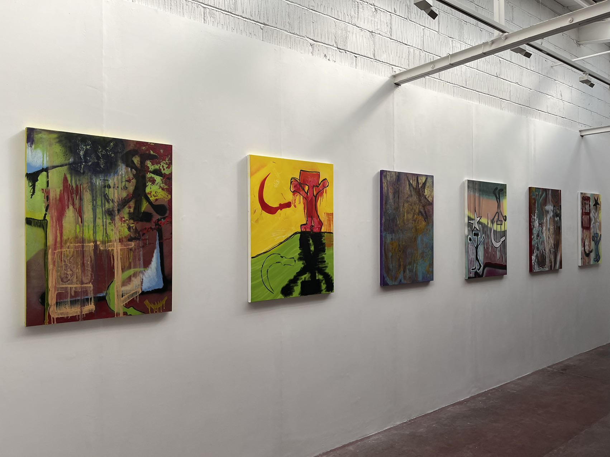
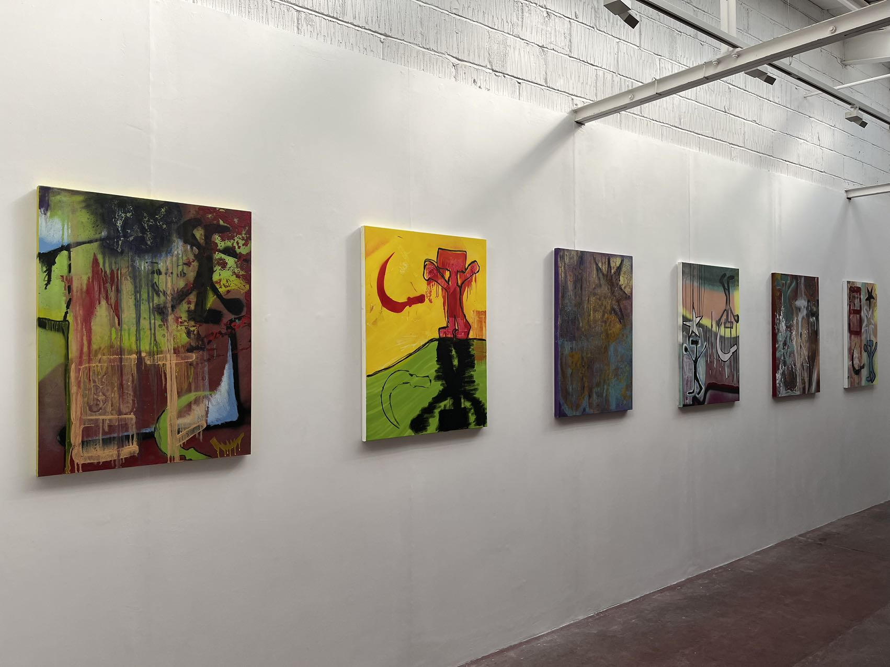
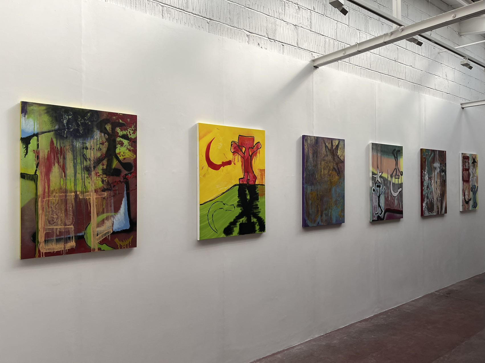

10 Greatorex Street, London | 4-9 July
With his first solo show, German-born Russian artist Misha Bozanovski invites audiences to look into his search for permanency through a collection of distantly familiar symbols and textures.
During his study at Central Saint Martins, Misha experimented with performance, installation, sound and video, often finding himself unconsciously situated at the centre of his working subjects. The situating of one’s self within his work allows him to creatively revisit once-inhabited cultural environments. His realisation on the topic of ‘room’, has allowed for the creation of spaces on canvas where a constant revisiting of phantasmic childhood memories can be found.
Focusing more on the subject of ‘longingness’ - both physical and mental, A ROOM OF MY OWN presents a collection of paintings that question the existence of ‘home’ through traumas of the past. Narrating the process of seeking through his works, a question of whether permanent residency will ever be acquired in this currently multicultural world is raised, and if so, will physical stability ease the ever-drifting mind.
